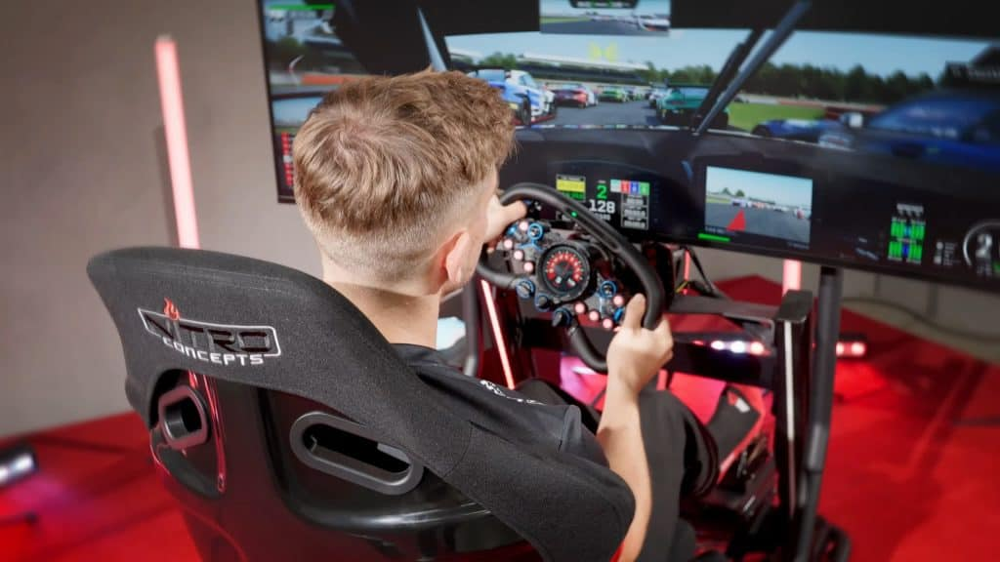

O que é o sim Racing?
Sim. Racing, ou Simulador de corrida, é o
termo dado para a prática de simular
uma corrida de automóveis em um
computador ou console, apartir do
auxilio de um volante para o mesmo.
O Sim. Racing, permite ao usuário,
experênciar o sentimento de acelerar
maquinas potentes do conforto e da
segurança de sua casa.

Academia virtual de pilotos
Nossa maior realização, é de dar a oportunidade
para que esses jovens pilotos ingressem em academias
de jovens pilotos como a da Willams, Ferrari, Mclaren,
Mercedez, Alpine (Antiga Renault), Sauber e Red Bull.
Atualmente, atuamos como a primeira, e até então a única,
academia de jovens pilotos virtuais. Nossos assistidos
já competem em campeonatos de corridas de turismo, e em campeonatos
de corridas de longa duração com revesamento.

Categorias Nacionais
Alguns de nossos assistidos já alcançaram o automobilismo real,
com alguns já tendo até titulo em categorias de base da Stock Car,
Porsche Cup, Nascar Brasil e Fórmula 4.
Com o tempo, esses pilotos poderam alcançar o topo de suas catégorias,
podendo serem futuros campeões ou até mesmo, multicampeões em diversas
catégorias.